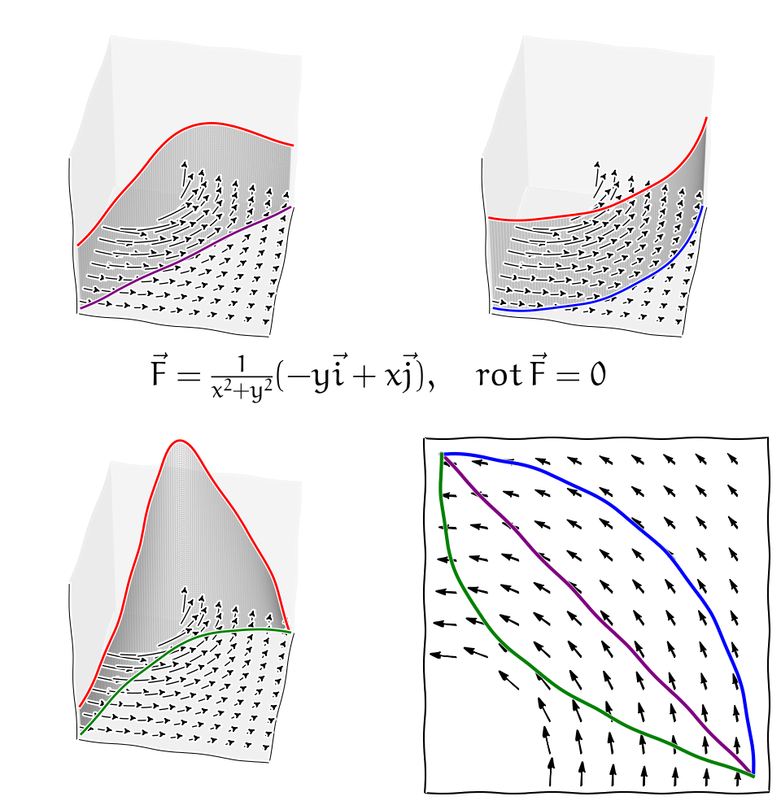

Závislost a nezávislost integrálu na integrační cestě

Křivkový integrál v nekonzervativním poli (obsahy jsou různé)

Křivkový integrál v konzervativním poli (obsahy jsou stejné)
Robert Mařík
2020
Pokud se matematické výrazy nezobrazují korektně, nechejte znovunačíst stránku (Reload, Crtl+R, F5) nebo použijte html verzi prezentace.
Ovládání: Prezentaci je možno posouvat šipkami nebo mezerníkem. Klávesa "S" zmenšuje písmo, "B" zvětšuje (smaller/bigger). Klávesa "C" zobrazí obsah (content). Klávesou "A" se přepíná režim prezentace/html stránka. Kliknutím na obrázek se obrázek zvětší na vertikální rozměr okna. Pro zavření zvětšeniny klikněte do zašedlého zbytku stránky nebo použijte klávesu "ESC".
Slidy jsou doprovodným materiálem k předáškám. Některá tvrzení platí pouze za předpokladů dostatečné spojitosti funkcí nebo jejich derivací. V jednoduchých technických aplikacích bývají tyto předpoklady splněny a proto je nezmiňujeme. Přesná formulace vět je v učebním textu a v odborné literatuře.
V této přednášce se seznámíme s nástroji pro pohodlný výpočet křivkového integrálu v případě, kdy tento integrál nezávisí na integrační cestě a s metodou převodu křivkového integrálu na dvojný integrál. Tyto myšlenky dnes stojí v samotném základu mnoha dalších teorií a jsou důležité pro přechod mezi lokálním a globálním (mikroskopickým a makroskopickým) popisem transportních jevů. Proto je až neuvěřitelné, že uvedený postup odvodil pekař a samouk George Green, který absolvoval jenom jediný rok školní docházky ve věku od osmi do devíti let! Své dílo opublikoval vlastním nákladem a povětšinou rozdal přátelům, kteří však textu pravděpodobně nemohli vůbec rozumět. Proto nevešlo okamžitě ve známost. Nezávisle na Greenovi podobný přístup objevili i někteří další fyzikové.
Integrační cesta je nedílnou součástí zadání křivkového integrálu. Přesto na ní někdy nemusí záležet. Potom je možné volit cestu co nejvýhodněji. Zdroj: pixabay.com
V následujících větách si ukážeme některé souvislosti mezi studovanými pojmy. Tyto souvislosti existují, pokud objekty se kterými pracujeme jsou dostatečně pěkné - funkce jsou dostatečně hladké, oblasti mají dostatečně hladkou hranici a neobsahují díry apod. Pro úplnost uvedeme nebo zopakujeme potřebné pojmy. Některé pojmy pro názornost uvedeme poněkud volnější interpretací, jejich přesnější zavedení je možno nalézt v literatuře.
Podle této věty je tedy vektorové pole v prostoru konzervativní právě tehdy, když je jeho rotace nulová a to je právě tehdy, když pro toto pole existuje kmenová funkce a je tedy možno zavést potenciál (záporně vzatá kmenová funkce).
Věta (o nezávislosti integrálu na integrační cestě).
Uvažujme vektorovou funkci \(\vec F\), křivku \(C\) a oblast \(\Omega\) v \(\mathbb{R}^3\). Následující výroky jsou ekvivalentní za předpokladu hladkosti funkcí, regulárnosti křivek a jednoduše souvislé oblasti \(\Omega\).
- Integrál \(\int_C \vec F\mathrm{d}\vec r\) nezávisí v \(\Omega\) na integrační cestě.
- Křivkový integrál \(\oint_C \vec F\mathrm{d}\vec r\) po libovolné uzavřené křivce \(C\) v \(\Omega\) je roven nule.
- Rotace \(\nabla\times \vec F\) vektorového pole \(\vec F\) je v \(\Omega\) rovna nulovému vektoru.
- Existuje funkce \(\varphi\) s vlastností \(\nabla\varphi=\vec F\) na \(\Omega\).
Pokud jsou předchozí podmínky splněny (platnost jedné z nich vynutí platnost i všech ostatních), je možno křivkový integrál vypočítat podle vzorce \[ \int_C \vec F\mathrm{d}\vec r=\varphi(B)-\varphi(A) \] kde \(A\) a \(B\) jsou počáteční a koncový bod křivky \(C\) a \(\varphi\) je kmenová funkce vektorového pole \(\vec F\).
Větu je možno formálně vyslovit i pro jiný než trojrozměrný prostor. Pokud je pole v předchozí větě pouze v rovině, tj. \(\vec F=(F_x, F_y)\), doplníme třetí komponentu pro výpočet rotace nulou. Protože \(\nabla \times\vec F=\left(\frac {\partial F_x}{\partial y}-\frac {\partial F_y}{\partial x}\right)\vec k\), přechází podmínka na nulovost rotace v nám již známou nutnou a postačující podmínku \[ \frac {\partial F_x}{\partial y}=\frac {\partial F_y}{\partial x} \] pro to aby výraz \[F_x\mathrm{d}x+F_y\mathrm{d}y\] byl totálním diferenciálem.
Pokud pracujeme v prostoru vyšší dimenze, podmínka na rotaci je nahrazena jinou, komplikovanější podmínkou. Všechny další body věty o nezávislosti na integrační cestě však zůstávají v platnosti beze změny.
Podmínka hladkosti funkcí na jednoduše souvislé oblasti je podstatná. Například pole \(\vec v=-\frac{y}{x^2+y^2}\vec i+\frac{x}{x^2+y^2}\vec j\) má rotaci rovnu nule ve všech bodech, kde je definované, tj. v celém prostoru kromě osy \(z\). Přímým výpočtem je možno ukázat, že křivkový integrál po jednotkové kružnici v rovině \(z=0\) je roven \(2\pi\).
Křivkový integrál v nekonzervativním poli (obsahy jsou různé)
Křivkový integrál v konzervativním poli (obsahy jsou stejné)
Věta (Greenova věta).
Nechť \(\Omega\subseteq\mathbb{R}^2\) je jednoduše souvislá regulární oblast,jejíž hranicí je po částech regulární křivka \(\partial \Omega\) orientovaná tak, že při obíhání podél křivky \(\partial \Omega\) je oblast \(\Omega\) vlevo. Nechť vektorová funkce \(\vec F(x,y)=P(x,y)\vec i+Q(x,y)\vec j\) je hladká uvnitř nějaké oblasti, obsahující množinu \(\Omega\) a její hranici \(\partial \Omega\). Platí \[ \underbrace{\oint_{\partial \Omega}P(x,y)\mathrm{d}x +Q(x,y)\mathrm{d}y }_{\text{Cirkulace po hranici $\partial \Omega$}}= \iint_{\Omega}\underbrace{\left(\frac{\partial Q(x,y)}{\partial x}-\frac{\partial P(x,y)}{\partial y}\right)}_{[\nabla \times (P\vec i+Q\vec j)]_z}\mathrm{d}x \mathrm{d}y. \]
online výpočet - pro množiny typu \(\Omega=\{(x,y)\in\mathbb{R}^2: a\leq x \leq b, u(x)\leq y \leq v(x)\}\)
Použijeme-li pro funkci \(\vec F\) vystupující v Greenově větě třídimenzionální rozšíření (třetí komponenta nulová), vidíme, že vpravo v dvojném integrálu figuruje třetí komponenta rotace \(\nabla \times \vec F\). Je to současně jediná nenulová komponenta vektoru rotace, zbylé dvě komponenty vektoru rotace jsou rovny nule.
Pokud zvolíme funkce \(P\) a \(Q\) tak, že platí \(\frac{\partial Q(x,y)}{\partial x}-\frac{\partial P(x,y)}{\partial y}=1\), potom vpravo vychází obsah množiny \(\Omega\) a Greenova věta umožňuje najít obsah množiny \(\Omega\) pouze z informace podél hranice! Na tomto principu fungují planimetry.
Nahradíme-li formálně vektorové pole \(P\vec i+Q\vec j\) vektorovým polem \(-Q\vec i+P\vec j\), dostáváme následující vztah mezi dvojným integrálem divergence vektorového pole přes oblast \(\Omega\) a křivkovým integrálem vyjadřujícím tok vektorového pole \(P\vec i+Q\vec j\) protékající přes hranici \(\partial \Omega\). \[ \underbrace{\oint_{\partial \Omega}-Q(x,y)\mathrm{d}x +P(x,y)\mathrm{d}y }_{\text{Tok přes hranici $\partial \Omega$}}= \iint_{\Omega}\underbrace{\left(\frac{\partial P(x,y)}{\partial x}+\frac{\partial Q(x,y)}{\partial y}\right)}_{\mathop{\mathrm{div}} (P\vec i +Q\vec j)}\mathrm{d}x \mathrm{d}y \] Výše popsaně dvě varianty Greenovy věty nám dávají možnost najít fyzikální interpretaci operátorů divergence a rotace. Podíl dvojného integrálu funkce \(f\) přes oblast \(\Omega\) a obsahu této oblasti je roven střední hodnotě funkce \(f\) na množině \(\Omega\). Při limitním přechodu, kdy rozměry množiny \(\Omega\) jdou k nule, dostaneme přímo funkční hodnotu funkce \(f\). Toto nám umožňuje dostat se do integrandů na pravých stranách vztahů.
Rotaci je tedy možno chápat jako limitu podílu cirkulace vektorového pole po uzavřené křivce a obsahu množiny uvnitř této křivky, kdy v limitním procesu stahujeme délku křivky k nule. Zejména pokud je práce po libovolné uzavřené křivce nulová, je nulová i rotace.
Podobně divergenci je možno chápat jako limitu podílu toku uzavřenou křivkou a obsahu množiny ohraničené touto křivkou, když rozměry uvažované oblasti jdou k nule. V ustáleném stavu a při absenci zdrojů ani spotřebičů je tok dovnitř křivky stejný jako tok ven (co do uzavřeného prostoru vteče, to i vyteče ven) a divergence je rovna nule.
Greenova věta umožňuje přechod mezi lokálním tvarem fyzikálních zákonů (co se děje v daném bodě prostoru) a globálním tvarem (co se děje v konečném objemu). Z fyzikálního hlediska je zajímavější lokální tvar, protože dává náhled, jak fungují studované procesy. Z hlediska pozorovatele je zajímavější globální tvar, protože pracuje s reálně měřitelnými pojmy. Vzhledem k možnosti přechodu mezi těmito přístupy je užitečnost Greenovy věty a jejího trojrozměrného zobecnění nezastupitelná.
Navážeme na koncept představený v přednášce o divergenci vektorového pole a podobnou bilanci stavové veličiny, jakou jsme použili v odvození rovnice kontinuity a difuzní rovnice použijeme pro konečně velký objem.
Je-li \(u(x,y)\) hustota stavové veličiny v množině \(M\), \(\sigma(x,y)\) vydatnost zdrojů a \(\vec J=(P,Q)\) pole popisující tok stavové veličiny, je rychlost s jakou roste množství stavové veličiny v množině \(M\) (tj. derivace množství podle času) dána vydatností zdrojů stavové veličiny snížené o odtok stavové veličiny přes hranici množiny \(M\). Matematicky vyjádřeno platí \[\frac{\mathrm d}{\mathrm dt}\left(\iint_M u\,\mathrm dx\mathrm dy\right)=\iint_M \sigma\,\mathrm dx\mathrm dy-\oint_{\partial M}-Q\,\mathrm dx+P\,\mathrm dy.\] Díky nezávislosti \(x\) a \(y\) na čase \(t\) můžeme zaměnit pořadí derivace podle času a dvojného integrálu vlevo. Křivkový integrál vpravo můžeme přepsat pomocí Greenovy věty na dvojný integrál. Tím dostáváme \[\iint_M\frac{\partial u}{\partial t}\,\mathrm dx\mathrm dy=\iint_M \sigma\,\mathrm dx\mathrm dy-\iint_{M}\left(\frac{\partial P(x,y)}{\partial x}+\frac{\partial Q(x,y)}{\partial y}\right)\,\mathrm dx\mathrm dy\] a po zkrácení označení v posledním dvojném integrálu a využití linearity integrálu vztah přejde do tvaru \[\iint_M\frac{\partial u}{\partial t}\,\mathrm dx\mathrm dy=\iint_M \sigma-\nabla\cdot \vec J\,\mathrm dx\mathrm dy.\] Protože tato rovnost má platit pro libovolnou množinu \(M\), musí se rovnat nejenom integrály, ale i integrované funkce, tj. musí platit \[\frac{\partial u}{\partial t}= \sigma-\nabla\cdot \vec J.\] Toto je stejná rovnice jako rovnice odvozená lokálními úvahami v přednášce o divergenci. Stejně jako v této přednášce poté můžeme pomocí konstitutivního vztahu \[\vec J=-D\nabla u\] obdržet difuzní rovnici \[\frac{\partial u}{\partial t}= \sigma+\nabla\cdot (D\nabla u).\]